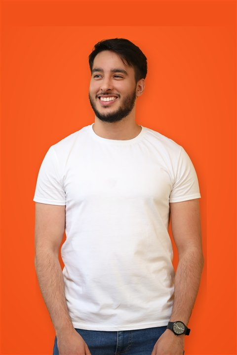

À propos
Je m'appelle Yassine.
Je construis des sites WordPress depuis 2020, pour des commerçants, des artisans et des PME qui veulent un site qui leur ressemble et qui travaille pour eux.

Pourquoi ce métier
Un métier choisi, pas subi.
J'ai commencé par une formation chez BeCode en 2019, puis un stage chez Indigo Studio qui s'est transformé en poste. Deux ans plus tard, je suis passé indépendant : je voulais choisir mes clients et le temps que je leur donne.
Ce qui me plaît, c'est de travailler avec des commerces qui n'ont pas de service informatique : une boulangerie, un salon de coiffure, un artisan. Leur site n'a pas besoin d'être compliqué, il doit juste bien faire son travail.
Je m'appuie aussi sur des outils d'intelligence artificielle dans ma manière de travailler : ils accélèrent des tâches répétitives, jamais les décisions qui comptent pour votre projet.
Comment je travaille
Direct, sans intermédiaire.
Un seul interlocuteur
Vous me parlez directement, du premier appel à la mise en ligne. Pas de chef de projet entre nous.
Des prix fixes
Vous savez ce que vous payez avant que je commence à travailler.
Des délais tenus
Le calendrier annoncé au devis est celui que je respecte.
Une disponibilité réelle
Je réponds sous 24 h, même après la mise en ligne du site.
24h
Délai de réponse
1
Interlocuteur, du début à la fin
0
Frais caché sur un devis
6000
Charleroi, code postal
Côté pratique
Les questions qu'on ne pense pas à poser.
Facturation
Via Smart, en toute légalité — pas de travail au noir, une facture pour chaque prestation.
Où je travaille
Depuis Charleroi, pour des clients de la région et au-delà. Les rendez-vous se font à distance ou sur place selon vos besoins.
Ce que je publie
Vous pouvez suivre mon travail sur LinkedIn .
On en parle ?